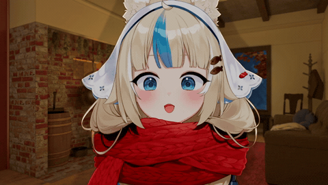

Vibe coded by Timer
Set your board exactly as it is in the game, then read the advice. The deep check plays each option out to the end of the run many times and ranks them by the chance of reaching your target score.
The game window and log never leave your computer. The picture is read here in the browser and discarded. Card names use a text reader that downloads once from a CDN; without it, cards are matched by their pictures.
Each option is followed by the rest of the run played by the validated strategy, on the same random draws. Bars show the chance of reaching your target; the whisker is the 95% range. Close options are genuinely close: a wide whisker means more playouts would be needed to separate them.